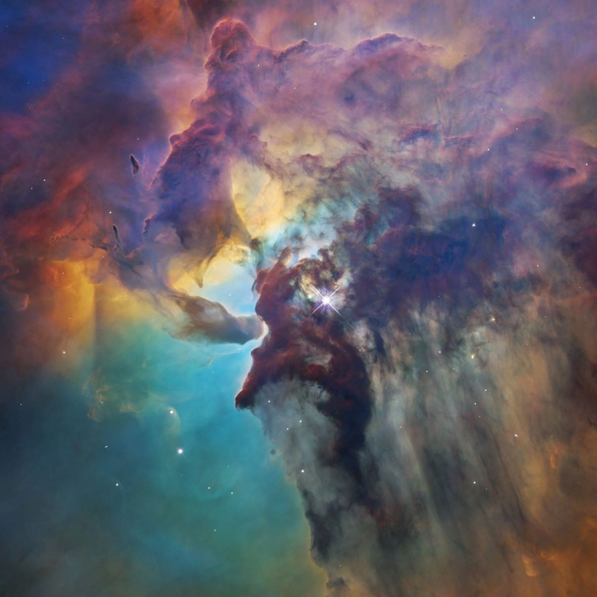
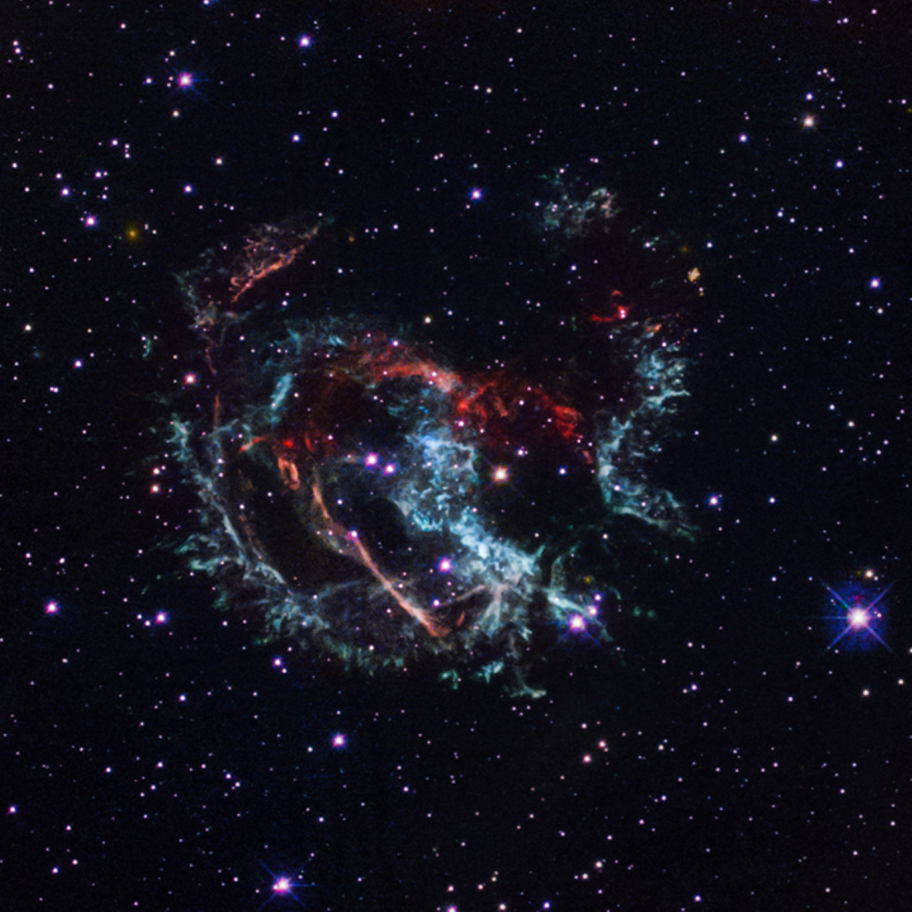
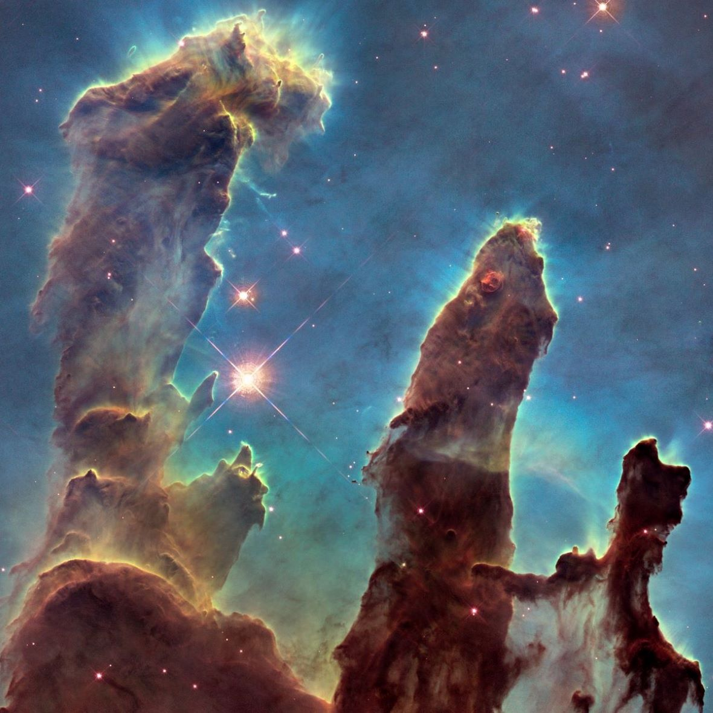
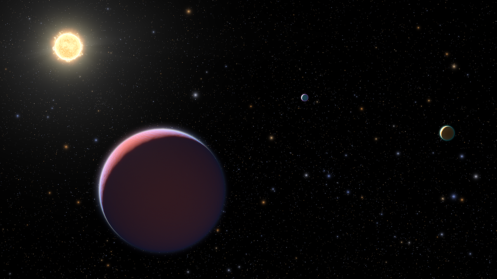

Named in honor of the trailblazing astronomer Edwin Hubble, the Hubble Space Telescope is a large, space-based observatory, which has revolutionized astronomy since its launch and deployment by the space shuttle Discovery in 1990. Far above rain clouds, light pollution, and atmospheric distortions, Hubble has a crystal-clear view of the universe. Scientists have used Hubble to observe some of the most distant stars and galaxies yet seen, as well as the planets in our solar system.
Hubble’s capabilities have grown immensely in its over 30 years of operation. This is because new, cutting-edge scientific instruments have been added to the telescope over the course of five astronaut servicing missions. By replacing and upgrading aging parts, these servicing missions have greatly extended the telescope’s lifetime.
Telescopes have a particular range of light that they can detect. Hubble’s domain extends from the ultraviolet through the visible (which our eyes see) and into the near-infrared. This range has allowed Hubble to deliver stunning images of stars, galaxies, and other astronomical objects that have inspired people around the world and changed our understanding of the universe.
Hubble has made more than 1.5 million observations over the course of its lifetime. Over 19,000 peer-reviewed science papers have been published on its discoveries, and every current astronomy textbook includes contributions from the observatory.
